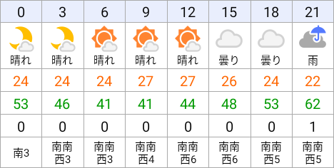
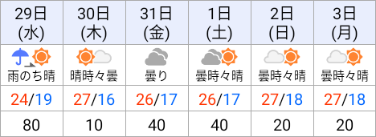

今日と明日の天気の見方

上から、時刻、天気、気温、湿度、降水量(mm/h)、風向風速(m/s) が表示されています。
週間天気予報の見方

上から日付、天気、気温(最高/最低)、降水確率(%) が表示されています。
表示履歴の削除について
- 履歴が表示されている画面のメニューから、すべての履歴を削除できます
- 個別の履歴を削除する場合は、削除したい項目をロングタップしてください
データソースについて
- 天気情報、および天気のアイコンは Yahoo!天気情報 のページから取得して表示しています。
- Yahoo!天気情報の仕様が変更された場合、動作しなくなる可能性があります。